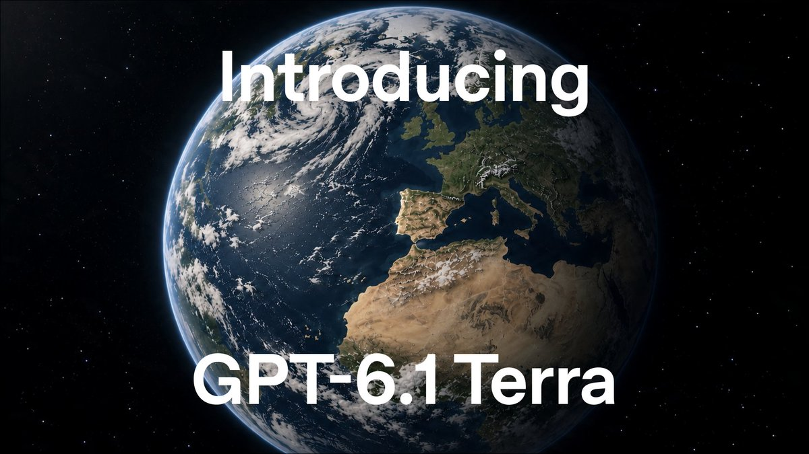
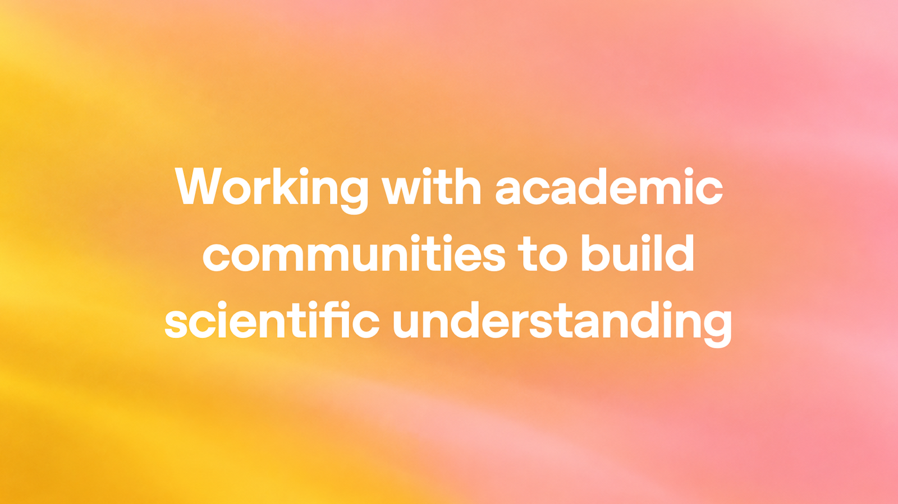
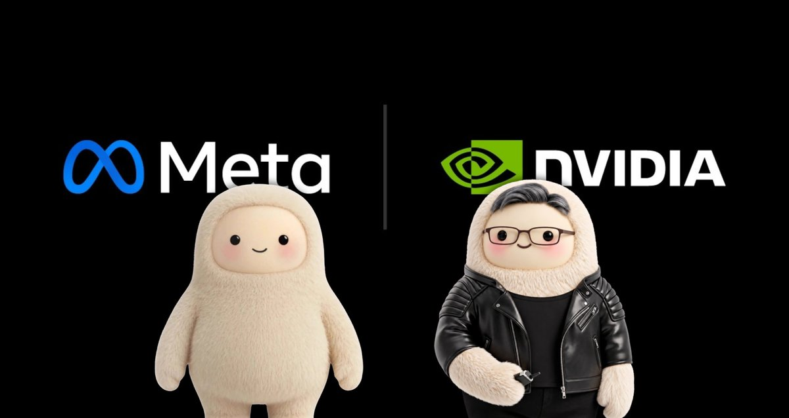
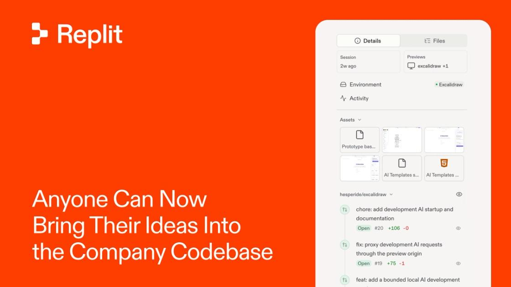
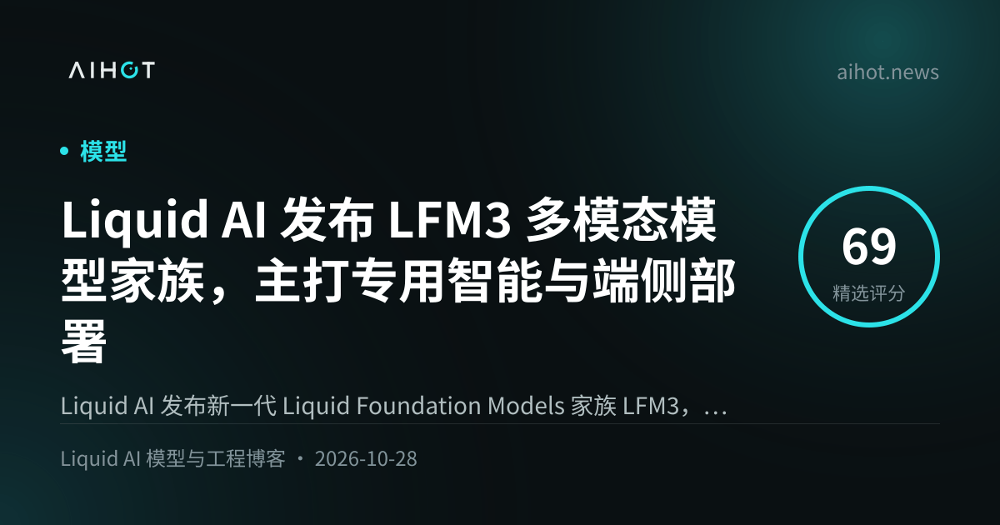
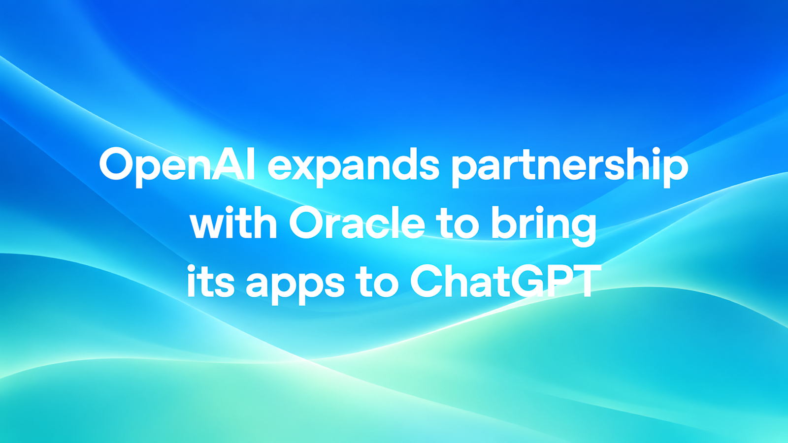

01产品 头条未证实项
OpenAI 发布 GPT-6.1 Terra：电脑操作中档模型，API 标准价较 5.6 Terra 降 50%
10-27 02:06 北京时间周一头条 · 高互动官帖独立来源 4 家

GPT-6.1 Terra 官宣视频封面（来源：@OpenAI / X）
介绍
北京时间 10-27 02:06，@OpenAI 发布 GPT-6.1 Terra：面向电脑操作、视觉推理与更自然写作的中档模型，可读屏、跨应用操作，并在 ChatGPT Work 与 Codex 向 Plus / Pro / Enterprise / Edu 推送；开发者 API 模型 id 为 gpt-6.1-terra。官帖称相对 GPT-5.6 Terra，标准 API 价降 50%；在 Agents' Last Exam 上大幅优于 5.6 Terra，并对齐 GPT-6 Astra，单价约 1/10，任务完成平均快于 Astra 与 GPT-6.1 Sol 超 3×。第三方 OpenRouter 价目读到标准价约 $1 / $5 每百万 input/output token（缓存读约 $0.05/M）。openai.com 对应索引页本次请求 403，数字以官帖线程 + OpenRouter/AIHOT 交叉为准。
为什么重要
把「能干活的电脑操作」压到中档价位，等于把 Work/Codex 日常额度从旗舰档挪向可规模化的吞吐档。
要点
- 官宣硬点：Work + Codex（Plus/Pro/Enterprise/Edu）；API
gpt-6.1-terra；标准 API 价较 5.6 Terra −50% - 基准（OpenAI）：Agents' Last Exam 对齐 Astra · 约 1/10 价 · 平均 >3× 快于 Astra/Sol
- 交叉价：OpenRouter / AIHOT 读到 $1/$5 per 1M；官网索引页本次 403
- 社区：WaytoAGI 实测称更便宜、幻觉硬猜下降，复杂编程仍不如 Sol/Astra
⚠ openai.com Terra 索引页本次 HTTP 403，未能直接核对官网正文；$1/$5 以 OpenRouter 价目 + AIHOT 转述交叉
02研究未证实项
OpenAI：模型产出三项数学/CS/物理结果，交外部专家 shepherd 转化为科学理解
10-27 05:50 北京时间研究发布 · 官博+shepherd独立来源 4 家

OpenAI 科学理解协作社交图（来源：openai.com / OG）
介绍
北京时间 10-27 05:50，@gdb 宣布三项「重大科学发现」，并链向官博：模型在调和分析、复杂度与量子场论各给出一项结果——各维度 local smoothing 猜想（进而蕴含全维 Kakeya 与 Stein restriction）、指数时间假说（ETH）为假（Lean 已形式化；Impagliazzo / Paturi / Williams 等 shepherd）、以及含规范场与费米子的四维相互作用 QFT（含 QCD 与纯 Yang–Mills 存在性子问题）的严格存在性证明（物理侧暂缓公开 AI 原稿，由 Gross 等组写）。OpenAI 称手稿应视为原始研究数据，并实验三种披露策略；不寻求学术署名，协作自愿无偿。
为什么重要
验证与披露流程本身成为产品：谁先打开、何时公开 Lean/自然语言，直接决定学界如何接住 AI 产出的证明。
要点
- 数学：local smoothing 全维 → Kakeya / Stein；Lean + 自然语言已公开
- CS：ETH 为假；Lean 验证；原提出者 Impagliazzo/Paturi + Williams shepherd
- 物理：QCD / Yang–Mills 存在性；材料暂缓公开，Gross 等组主导写稿
- 交叉：@gdb + openai.com + AIHOT + THE DECODER
⚠ 物理结果的 AI 原稿按 shepherd 组决定暂缓公开；社区对其「里程碑」强度仍有争论，正文以官方披露策略为准
03产业
NVIDIA×Meta：扩大 Muse 系列合作，NVIDIA 拟向 Meta 股权发行投资 $3B
10-27 14:02 北京时间算力×Agent · 官宣独立来源 3 家

NVIDIA×Meta Muse 合作图（来源：@nvidianewsroom / X）
介绍
北京时间 10-27 14:02，@nvidianewsroom 与 NVIDIA 投资者新闻稿同发：NVIDIA 与 Meta 将扩大在 Muse 及 Muse 系列模型上的合作，优化推理与训练性能，并探讨 NVIDIA OpenShell（安全部署）与 NVIDIA Sentry（监控 agent 行为）。Meta 拟扩大部署 Vera Rubin 与 Vera CPU，并采用 Spectrum-X 以太网与 BlueField-4。新闻稿另写明：NVIDIA 将向 Meta 的股权发行投资 $30 亿。
为什么重要
Agent 产品线把芯片、安全参考架构与股权绑在同一条「扩容」声明里——算力伙伴关系开始显式覆盖运行时治理。
要点
- 产品：扩大 Muse 合作；OpenShell + Sentry 方向
- 硬件：Vera Rubin / Vera CPU + Spectrum-X + BlueField-4
- 资本：NVIDIA 投资 Meta 股权发行 $3B（新闻稿原文）
- 交叉：@nvidianewsroom + investor.nvidia.com + AIHOT
04形式化未证实项
Axiom：有限单群分类定理（CFSG）完成 Lean 自动形式化——约 15,000 页、50M 行、24 天
10-27 22:34 北京时间验证规模 · 高互动独立来源 2 家
Axiom CFSG 官宣视频封面（来源：@axiommathai / X）
介绍
北京时间 10-27 22:34（UTC 14:34，仍在本窗内），@axiommathai 宣布完成数学史上最长证明之一——有限单群分类定理（CFSG）——的 Lean 自动形式化：约 15,000 页、跨代 100+ 数学家。官帖称 AxiomProver 集群在 24 天内生成约 5,000 万行 Lean，并称其为迄今最大 Lean 代码库；过程中 AI 发现已发表证明里某断言的反例，但 UGT 仍成立，并用新结果替换该步，另修复数百处重大 errata。AIHOT/第三方图示另有约 38M–43M 行口径，正文以 Axiom 官帖 50M 为准。
为什么重要
把跨代人类巨著压成可机检工件，验证工程本身变成可复用的「数学基建」。
要点
- 规模（Axiom）：~15,000 页 → 50M 行 Lean · 24 天 swarm
- 纠错：发现已发表步骤问题；UGT 仍成立；数百处 errata
- 邀请：请群论/Lean 社区重跑证明检查并核对语句语义
- 交叉：@axiommathai 线程 + AIHOT；行数第三方图示与官帖略有出入，以官帖为准
⚠ AIHOT/图示另见 ~38M–43M 行口径；本条采用 @axiommathai 官帖「50 million lines」
05政企未证实项
Anthropic×GSA：Claude 政企采购一律 40% 折扣，估可为政府省约 $1B
10-27 北京时间政企采购 · Newsroom独立来源 2 家

Anthropic×GSA 合作社交图（来源：anthropic.com / OG）
介绍
10-27，Anthropic Newsroom：与美国 GSA 扩大 OneGov 合作——政府伙伴购买 Claude Enterprise、Claude for Government 与 Claude API 享 40% 折扣，并首次覆盖全部产品面（含后续经云厂商采购）；折扣延及州/地方/部落/领地政府。约 500 家联邦/州/地方政府组织已在用 Claude；Claude for Government 周活自 2 月约增 8×，联邦民用机构用量约增 20×。折扣估可为政府节省 $10 亿，无最低消费。@AnthropicAI 官帖落在窗外（北京 10-28 06:20），作交叉核验。
为什么重要
折扣绑在 MAS/OneGov 通道上，把「能买到合规 Claude」从试点扩成可规模化的默认采购路径。
要点
- 折扣：全表面 40%；估省 $1B；无最低消费
- 覆盖：联邦 + SLTT；Bedrock/Vertex 上 FedRAMP High 等路径
- 交叉：anthropic.com（窗内按发布日）+ AIHOT；@AnthropicAI 略出窗外核验
⚠ @AnthropicAI 官帖时间戳在 UTC 窗结束后；以 Newsroom 发布日 + AIHOT 入窗
06产品
Replit Cloud Agents：非工程同事可用自然语言向公司代码库提交经测试的 PR
10-27 23:53 北京时间Self-Driving Company · 官博独立来源 3 家

Replit Cloud Agents 社交图（来源：replit.com / OG）
介绍
北京时间 10-27 23:53（UTC 15:53，窗内），@Replit 与官网博文：面向 Pro & Enterprise，Cloud Agents 让设计/客服/运营等用自然语言改公司核心仓库——在隔离云沙箱里跑通应用、点测变更，把截图/视频附在 GitHub PR 或 GitLab MR 上；工程师仍审批合并。官帖称自家设计团队已借此安全合入超 25 万行。另含共享环境、评审反馈写入 skills（EA）、Slack @Replit 起单等。
为什么重要
把「提需求」变成「附证据的可合并变更」，瓶颈从写代码挪到审查与权限设计。
要点
- 对象：Pro & Enterprise；工程师最终把关
- 证据：沙箱浏览器点测 + PR 附视频/截图
- 交叉：@Replit + replit.com + AIHOT
07开源未证实项
Liquid AI 发布 LFM3：六款约 2B 多模态开源权重，预训练 22T tokens
10-27 北京时间端侧专用智能 · 官博独立来源 2 家

LFM3 发布社交图（来源：AIHOT OG）
介绍
10-27，Liquid AI 官博发布 LFM3（Liquid Foundation Models 第三代）：首批 六款约 2B 参数模型（文本 / 视觉 / 音频 / omni / 决策），共用 LFM3-1.7B-Base 骨干；预训练 22T tokens，三混合架构（门控短卷积 + SWA + 全局注意力）。文本版 256K 上下文，4-bit 约 1GB；权重开源至 Hugging Face / Playground / API。官称 LFM3-1.7B 参数更少却优于前代 LFM2.5-2.6B。@liquidai 主帖落在窗外（北京 10-28 01:07），作交叉。
为什么重要
把「可本地微调的专用小模型」做成统一多模态套件，对抗「一个大通用模型打天下」的端侧路线。
要点
- 规格：~2B×6；22T pretrain；文本 256K；开源权重
- 架构：tri-hybrid（卷积 / SWA / 全局注意力）
- 交叉：liquid.ai + AIHOT；@liquidai 略出窗外核验
⚠ @liquidai 官帖在 UTC 窗结束后约 1 小时；以官博发布日 + AIHOT 入窗
08政企
OpenAI×Oracle：把 Oracle 应用与数据接入 ChatGPT，并推出 AI Security Mesh 等新品
10-27 北京时间企业工作区 · 官博独立来源 2 家

OpenAI×Oracle 合作社交图（来源：openai.com / OG）
介绍
10-27，OpenAI 官博：扩大与 Oracle 合作——推进 Oracle AI Workspace，在 ChatGPT 内按权限完成跨财务/采购/规划等工作流；并发布 Oracle AI Security Mesh（用 OpenAI 网络模型找修漏洞）、Oracle AI SMB Bundle（ChatGPT Business + Codex + OCI 额度）、Oracle App Composer（Codex 等建应用并接 Oracle 数据）。Oracle 披露约 13 万 ChatGPT 活跃用户、超 9.5 万 Codex 活跃用户。美国客户可经 Oracle Marketplace 用 Universal Credits 采购 OpenAI API / Codex / ChatGPT Work。
为什么重要
企业软件巨头把「已有权限与审批」接到对话入口，Agent 不再另起一套身份体系。
要点
- 入口：Oracle AI Workspace in ChatGPT（权限/审批内）
- 新品：Security Mesh · SMB Bundle · App Composer
- 用量（Oracle 披露）：~130k ChatGPT · >95k Codex 活跃
- 交叉：openai.com + AIHOT
AIHOT 日报 10-27 + 10-28（按条目时间筛入本窗）读到
Terra/三项发现入窗；Muse/Axiom/GSA/Replit/LFM3/Oracle/Apple 按时间戳入窗；Genie 4 标窗外
X 公开数据（官方账号原推）读到
@OpenAI Terra 线程、@gdb 三项发现、@nvidianewsroom Muse、@axiommathai CFSG、@Replit Cloud Agents；@liquidai/@AnthropicAI 略出窗外作核验
你在窗口内发的推文（@HhhharryRen）读到 · 没更新
接口正常，窗口内 0 条
你的 X 收藏读到 · 没更新
可读；窗口内无新增可用于本窗主线的 AI 资讯书签
WaytoAGI 飞书知识库读到
10-27 共 7 条：客户端开发 / Manus / 语音 Agent / Grokbot 管理 / 369 视频项目 / Claude Code 审查 / Terra 实测
官方页面核对读到
openai.com 科学博文+Oracle；investor.nvidia.com Muse；anthropic.com GSA+drug；replit.com；liquid.ai LFM3；apple.com M6；Terra 索引页 403
媒体交叉读到
THE DECODER（科学 shepherd）；OpenRouter 价目（Terra $1/$5）
窗外条目读到
Genie 4 仅速览；Liquid/Anthropic 部分官帖略出窗外但官博在日